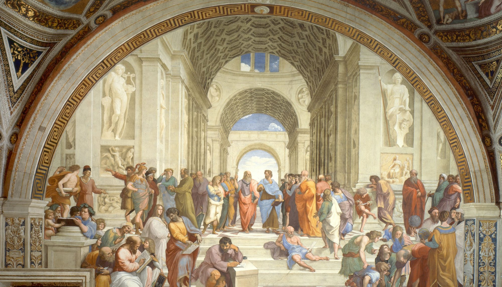

Het Griekse rijk was uiteindelijk als Romeinse provincie geëindigd in 476 na christus. Dit betekent niet dat het Griekse rijk helemaal weg was, want zelfs nu nog worden er dingen gedaan die door de Grieken worden gedaan. We hebben dezelfde bouwtechnieken als die van de Grieken, veel beelden hebben dezelfde structuur als die van de Griekse beelden en we hebben ook veel filosofische kennis door de Grieken. Het doorgeven van de literatuur uit de Klassieke Oudheid gebeurde door christenen en islamieten. Dit is ook dus de reden dat we nog steeds oud-Grieks les geven op school, omdat de Grieken veel impact hebben gehad op ons leven en dat nu nog steeds hebben. Het einde van Grieken was gebeurd doordat ze met elkaar oorlog ging voeren om macht te tonen aan elkaar. Zo konden de Romeinen profiteren en hun rijk overnemen. Vooral na de Perschische en Peloponnesische oorlog ging het niet zo goed met de Grieken, dus dan kan je wel verwachten dat de Romeinen hen gaat overnemen.
